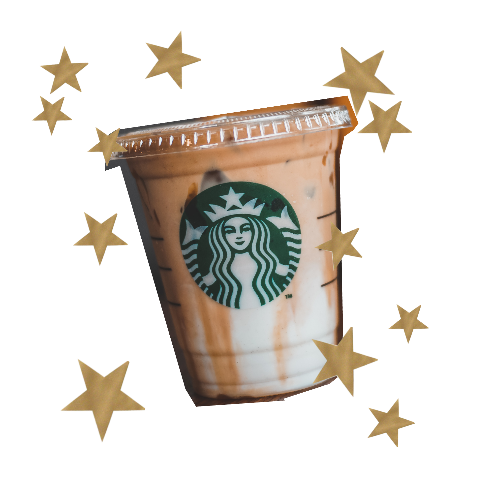
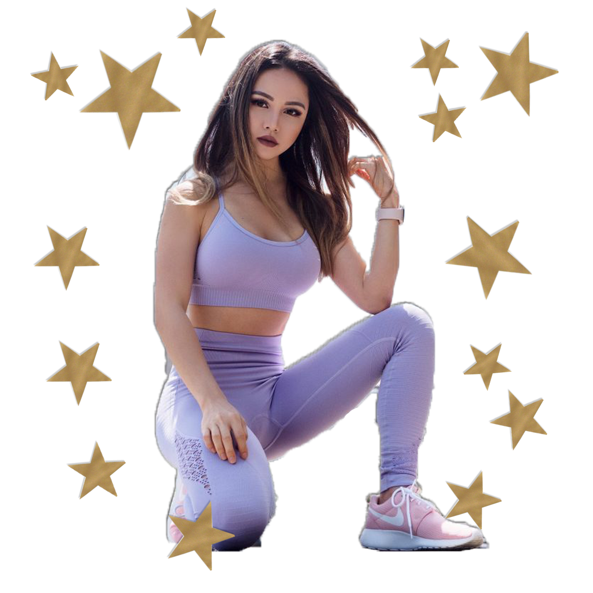

What I learned after realizing my boyfriend’s words would never be enough
There’s no quick fix for self-love.
I remember falling down the TikTok rabbit hole for the first time.
It was a couple weeks into the beginning of the pandemic, and I found myself staring at the clock. I had consumed most of the reality TV Netflix had to offer—Love Is Blind, Too Hot To Handle—I even painfully made my way through Tiger King. I was bored out of my mind and TikTok was the answer.
It seemed like every single video was either about whipped coffee, Amazon must-haves or workout challenges. As I laid there scrolling in my pajamas at 4 p.m. on a Tuesday, I came across a girl with a flat stomach, sculpted legs and toned arms that were just the perfect amount of dainty. My hand subconsciously brushed over my belly. There she was in her perfect body, telling me all I had to do to look like her was run for three miles a day after doing a 30-minute glute circuit (and cut out absolutely every type of sugar while following a calorie deficit.)
Every time the video replayed, her voice urging me to “seize the moment,” it made me hate the bed I found so much comfort laying in before. Naturally, I went to the comments, looking for others with no care in the world except their love for sleep. But every comment discussed the elation that came with finishing their daily run or thanking the user for making a workout video during lockdown, since “there’s no excuse now!”
I looked outside my window, realizing the sky was already turning orange, and started to feel guilty for not using my pandemic time “wisely” when that girl was probably going for her second optional run of the day.
I threw on a sweater, grabbed the closest pair of sweatpants and picked up my keys. Within two minutes, I was sliding into the driver’s seat of my Mini Cooper, trying to find a yoga mat so I could start an ab circuit first thing in the morning.
When the clerk at the Giant Tiger mentioned they only had one mat in stock, I grabbed it from its container and briskly walked to the cashier as if someone was going to take it. My stomach couldn’t help but drop at the thought of being the last person in town to buy a yoga mat.
It wasn’t always like this. I used to be the girl who preached self-love. At a young age, I had a confidence in myself that even the Regina Georges on the playground couldn’t understand.
“Why do you smile so big when your teeth are so crooked?”

I looked back at the pig-tailed girl with her arms crossed. A huge grin spread across my face.
“Who said you had to have perfect teeth to smile?”
I’d like to think that the quick-witted eight-year-old who knew her self-worth wasn’t defined by the alignment of her teeth was still in me, but I felt like I was losing her as the pandemic progressed.
Last year, I was probably the most confident I’ve ever been. Despite gaining the so-called “freshman 15,” I was loving my body for what it was. I wore crop tops to parties, got comfortable with my personality while meeting new people and worried about getting my money’s worth from my food plan by eating all the cupcakes the cafeteria had to offer. A year later, pandemic guilt had me chasing a body that wasn’t mine.
When these upsetting thoughts started to disrupt my daily routine, I decided to talk to my boyfriend, Jake, about it. The side of my face pressed to the speaker, my heartbeat echoing my ear as I waited for the rings to subside and his voice to solve all my problems.
“There is absolutely nothing wrong with how you look. You are the most beautiful woman I have ever met, and nothing is going to change what I think,” he said softly over the phone.
I waited for the moment where everything would be at peace in my mind, but it never came. I felt a knot form at the back of my throat.

“Yeah,” I mumbled, biting a hangnail off of my finger. I didn’t have the heart to tell him the words he said went through one ear and out the other.
“Hey, I mean it. Never feel like you have to change a thing.”
“Yeah, thanks.”
A couple weeks later, I woke up with strong period cravings that only a Caramel Ribbon Crunch frappuccino from Starbucks could quench. I drove home from the coffee shop with tears blurring my vision for what felt like the hundredth time in the past week. I quickly grabbed a napkin with one hand while steering with the other. I made a mental note to Google how many crunches I would need to do to burn off the 470 calories I had just consumed. My anxious breaths started to slow, knowing there must be some quick fix out there to act as a reverse button.
Looking back, I know I wasn’t alone in hoping for a fast solution to pandemic resting guilt. Between March 15 and May 9, the term “diet” jumped in Google searches from a 55 to 90 on its popularity scale. In the same time period, popular fitness YouTuber Chloe Ting gained around 6.4 million subscribers and more than 472 million views on her channel.
Her most popular video, “Abs in Two Weeks” has over 298 million views at the time of writing this. I could do the routine backwards in my sleep.
The view counts pushed me into overdrive. All these people were doing it, so I thought I had no excuse. If I wasn’t doing something to make my lower stomach fat melt away or make my legs slimmer, it felt like time wasted.
In an article for Shape.com, therapist Sheava Zadeh said humans thrive on routine and losing it can cause anger, depression and other emotional issues. People who were used to working out before the pandemic may therefore feel the need to keep up with the routine in spite of the barriers to doing so, she said.
While there are valid reasons to not work out during a pandemic–lack of energy, access to equipment, work out spaces, simply not wanting to exercise–the loss of routine can result in feelings of failure and falling behind.
I masked my pain by making it seem like fitness was something to help keep my mind off of things. Jake would even comment on how proud he was of me for finding a healthy hobby during quarantine. He continued to remind me of how gorgeous I am, but it still wasn’t doing anything to fix the way I looked at myself.
As the weeks passed, my body changed but my sense of self-worth didn’t. There was always more I thought I could be doing; my stomach still wasn’t flat enough and my thighs still moved when I walked.

One day after a workout, I looked at myself in the mirror—really looked. Since nothing else was working, I needed to confront my body. Instead of averting my eyes from the glass or pointing out the imperfections like I usually did, I challenged myself to stare. I was tired of being afraid of the way I would treat myself.
My body had seen me through a pandemic, yet there I was, making it my enemy. In reality, it’s the only thing that’s been with me every step of the way. It kept me healthy, nourished and strong enough to get in and out of bed every single day, which wasn’t the case for many others, be that due to a positive test, mental health struggles, or any other issues that can come up amidst a pandemic.
I could almost see the eight-year-old me on the playground looking back through the mirror with her huge smile as I rubbed my stomach pouch. I posed dramatically without worrying about how much my thighs would jiggle.
As my poses turned into a full dance party, I started thinking back to all the times Jake told me he loved my belly rolls and my round face. I realized I simply couldn’t hear any of it until I truly believed it myself.
My boyfriend believing I’m beautiful is amazing, but his love can’t be a substitute for the love I should have for my own body. I needed to do some deep self-reflection to find true peace within it. No one could ever provide that reassurance to me except myself.
This eureka moment in front of the mirror didn’t solve all of my insecurities—I’ve still been fighting an uphill battle. I had to learn that it’s okay to sleep in an extra hour instead of rolling the yoga mat out when I’m tired. It’s okay to drink that Caramel Ribbon Crunch frappuccino. It’s okay to love my body the way it is. Through it all, I realized that this is the only body I have, and the only time I’m ever wasting is when I sit around wishing I was in another one.
If I think I’m absolutely stunning, then that’s the reality I claim.